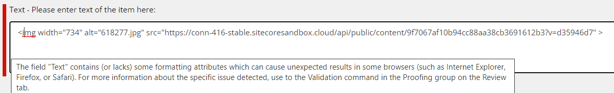
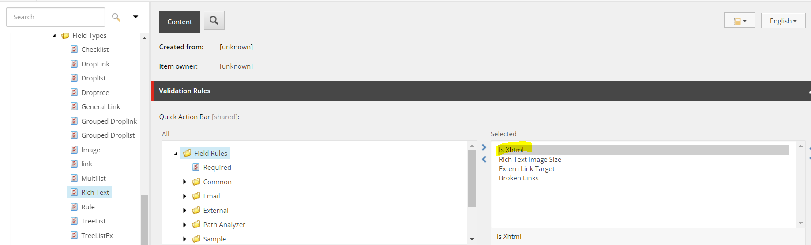

Troubleshooting SCCH
How to solve problems you might encounter in the CMP and DAM sections of the Sitecore Connect for Content Hub connector.
To help find solutions for errors or problems in general, you can do the following:
Check the log in the Sitecore Content Hub for the created trigger. Trigger the event that fires the trigger and then check the log as follows:
On the menu ribbon, click Manage .
Click Actions.
Click the Auditing tab.
Check posted messages in the Azure Service Bus.
Check the Sitecore log file and scan for any CMP related errors.
Check the Sitecore log file and scan for any CMP or DAM related errors.
You browse a Sitecore DAM image field type link, and you get a 404 not found error.
To solve this problem:
In the Sitecore Launchpad, click Desktop, and switch from Master database to Core database.
In the Content editor, navigate to sitecore/system/Field types/Simple types/Image.
On the Content tab, in the Data section, clear the Control field. Save the item.
The connector does not change any data values or formats when it syncs data from the Content Hub rich text editor field to the Sitecore rich text editor. The XHTML validation in the Sitecore rich text editor may highlight the error:
|  |
To solve this problem:
In the Content editor, look for the following items:
/sitecore/system/Settings/Validation Rules/Field Types/Rich Text
/sitecore/system/Settings/Validation Rules/Global Rules
For all validation rules under these two items, in the Selected list, click Is Xhtml to move it to the All list.
 Save the item.
The Sitecore Azure ToolKit (SAT) requires minimum dependency to perform the config transformation. After you have applied the SCCH package to the instance, the bin\scch folder has all the necessary assemblies.
To solve the problem:
In the Azure App Service Editor, open the
Web.configfile.In the
assemblyBindingnode, add the following code:<dependentAssembly> <assemblyIdentity name="Microsoft.Extensions.Caching.Abstractions" publicKeyToken="adb9793829ddae60" /> <bindingRedirect oldVersion="0.0.0.0-3.1.14.0" newVersion="3.1.14.0" /> <codeBase version="2.1.2.0" href="bin/Microsoft.Extensions.Caching.Abstractions.dll" /> <codeBase version="3.1.5.0" href="bin/Microsoft.Extensions.Caching.Abstractions.dll" /> <codeBase version="3.1.14.0" href="bin/scch/Microsoft.Extensions.Caching.Abstractions.dll" /> </dependentAssembly>Save and refresh the Azure App Service Editor.
The Content Hub SDK in SCCH 5.0 requires Microsoft.Extensions.DependencyInjection version 3.1.14.0. For deployments on Sitecore 10.1.x and earlier that reference earlier versions, you must do one of the following:
Update and rebuild any custom assemblies to refer to version 3.1.14.0.
Add a redirect binding configuration in the
web.configfile.
For Sitecore deployments prior to 10.2, custom assemblies must refer to the latest Microsoft.Extensions.DependencyInjection version 3.1.14.0, as SCCH 5.0 requires version 3.1.14.0 for the Content Hub SDK.
If you are unable to use this version, use this method to solve the error:
In Microsoft Visual Studio, create a new library project called
Sitecore.Connector.DI.Add the following package reference for the created project:
<PackageReference Include="Microsoft.Extensions.DependencyInjection.Abstractions" Version="3.1.14" /> <PackageReference Include="Microsoft.Extensions.DependencyInjection" Version="3.1.14" /> <PackageReference Include="Sitecore.Kernel" Version="13.0.0-r*" />
In the project, add a new class called
Configurator.cs. Add the following code to it:using Microsoft.Extensions.DependencyInjection; using Sitecore.DependencyInjection; namespace Sitecore.Connector.DI { public class Configurator:IServicesConfigurator { public void Configure(IServiceCollection serviceCollection){} } }Compile the project into an assembly. On your content management (CM) instance, copy the assembly file to the
binfolderOn your CM instance, go to the
\App_Config\Modules\Sitecore.Connector.CMPfolder and add a new config file.Add the following configuration to the new config file:
<?xml version="1.0"?> <configuration xmlns:patch="http://www.sitecore.net/xmlconfig/"> <sitecore> <services> <configurator type="Sitecore.Connector.DI.Configurator, Sitecore.Connector.DI"/> </services> </sitecore> </configuration>Save the file.
You might see an Empty Sitecore Attribute or Content Hub Mapping Field on Item error in the log after you click Select in a DAM public link selection window.
When you select the public link, DAM retrieves the attribute mapping configuration item. By default, Sitecore uses the English version field value in the attribute mapping configuration item. If you use a language other than English, for example Japanese, in the content editor, in the Master DB/System/Modules/DAM/Config/Mapping item, enter the language value for the Japanese language version.
The following table explains some of the issues you might encounter when you use the DAM functionality in SCCH, and how to resolve them.
Area where issue appears | Description | Workaround |
|---|---|---|
Content type | When the content type of an asset is changed in Stylelabs DAM, the change is not reflected in Sitecore. The rendition in Sitecore is therefore not shown. | n/a |
Image Properties | In the Content Editor, right-clicking on an image shows two options: Image Map Editor and Properties. If either is selected and you click on the Image Manager icon, the Media Library that is opened is not the Sitecore DAM library but the sitecore/media library. There is no option to change the media library. | n/a |
Clear the image field | Content Editor: With a Sitecore DAM image in the image field, clicking the Clear link does not clear the image field correctly. The thumbnail is cleared, but the URL remains. | Click Save to resolve the issue. |
Change an image | Content Editor: With a Sitecore DAM image inserted by clicking Browse and selecting an image from the sitecore/media library, the image field is not cleared correctly. | Clear the field by using the clear link, save the item and then select a new image. |
Clear the image field | Experience Editor: Clearing an image by clicking Remove the image without saving does not clear the field, even though the image is not displayed in the Experience Editor. | Click Save to resolve the issue. |
Change from DAM to media library image | Experience Editor: When you insert an image from Sitecore DAM, then click Choose an image and insert a new image from the sitecore/media library to replace the Sitecore DAM image, the field is not cleared correctly. | Click Remove image , click Save, then insert an image from the sitecore/media library. |
SXA | SXA is not supported for this version. | n/a |
SXA | If SXA is installed, and the IFrame is opening, the error MAsset Command is not implemented is returned and the IFrame fails to open. | This issue is resolved by updating the SXA config file
|
Behaviour Rich Text Editor | When inserting a video in the Rich Text Editor using the Design mode, the video cannot be moved or deleted. It can only be played. However, two console errors are thrown. | Switch to the HTML mode and adjust the video element as necessary. |
Behaviour Rich Text Editor | When an item containing only a video is saved and reopened using the Design mode, the item is frozen and cannot be edited. | Switch to the HTML mode and add an element as necessary. This will unfreeze the item. |
Login Procedure | As part of the login procedure, the window will refresh, and the content/experience editor will close without any warning message. | Save all changes prior to continuing to the login. Once you are logged in the window will not refresh again. |
Sitecore DAM login with Chrome in Incognito mode | In Sitecore Content Editor, if you use Chrome in Incognito mode, when you click Browse Sitecore DAM and attempt to sign in, the Sign In dialog box opens again asking for your credentials. | In the Chrome browser, set cookies option to Allow all cookies. Refer to the browser documentation for details. |